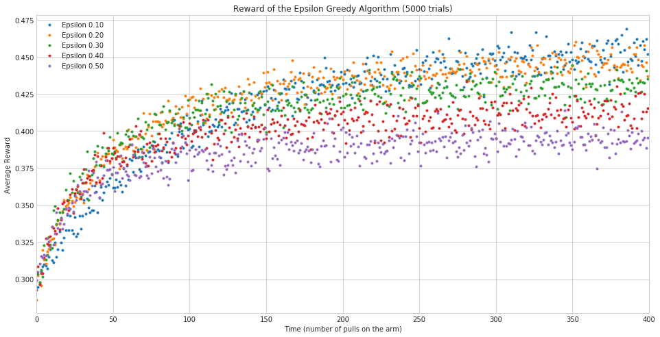

This code will run generate the probabilities. Although I made it so that using the EpsilonGreedy call method would both choose the arm and update the reward, in this case we need to know which arm was selected so I'm going to do the steps individually.
System Message: ERROR/3 (<string>, line 58)
Cannot find pygments lexer for language "ipython"
.. code:: ipython
def generate_probabilities(times=1000, trials=100):
"""this generates the probabilites for finding the best arm
Args:
trials (int): number of times to train the agent
times (int): length of time to train the agent
Returns:
Dict: the probabilites for each epsilon over time
"""
arm_probabilities = [0.1, 0.1, 0.1, 0.9, 0.1]
random.shuffle(arm_probabilities)
best_arm = arm_probabilities.index(max(arm_probabilities))
arms = [BernoulliArm(probability) for probability in arm_probabilities]
epsilons = numpy.array([0.05, 0.1, 0.2, 0.3, 0.4, 0.5])
outcomes = {}
for epsilon in epsilons:
agent = EpsilonGreedy(epsilon, arms)
probabilities = numpy.zeros(times)
for trial in range(trials):
for time in range(times):
arm = agent.select_arm()
agent.update(arm)
if arm == best_arm:
probabilities[time] += 1
agent.reset()
outcomes["Epsilon {:.02f}".format(epsilon)] = probabilities/times
return outcomes
System Message: ERROR/3 (<string>, line 92)
Cannot find pygments lexer for language "ipython"
.. code:: ipython
TRIALS = 5000
TIMES = 400
System Message: ERROR/3 (<string>, line 97)
Cannot find pygments lexer for language "ipython"
.. code:: ipython
start = datetime.now()
probabilities = generate_probabilities(trials=TRIALS, times=TIMES)
print("Run Time: {0}".format(datetime.now() - start))
probabilities = pandas.DataFrame.from_dict(probabilities)
probabilities.describe()
Epsilon 0.05 Epsilon 0.10 Epsilon 0.20 Epsilon 0.30 Epsilon 0.40 \
count 400.000000 400.000000 400.000000 400.000000 400.000000
mean 8.784956 9.971200 9.801344 9.084844 8.235194
std 3.064916 2.523568 1.775677 1.319447 0.998305
min 0.120000 0.275000 0.495000 0.757500 1.050000
25% 7.141875 9.740000 10.264375 9.390000 8.409375
50% 9.937500 11.187500 10.456250 9.475000 8.480000
75% 11.225000 11.457500 10.515000 9.530625 8.545000
max 11.720000 11.605000 10.727500 9.665000 8.712500
Epsilon 0.50
count 400.000000
mean 7.310087
std 0.763259
min 1.190000
25% 7.406875
50% 7.473750
75% 7.535625
max 7.725000
System Message: ERROR/3 (<string>, line 127)
Cannot find pygments lexer for language "ipython"
.. code:: ipython
probabilities.to_csv("epsilon_greedy_accuracy.csv")
System Message: ERROR/3 (<string>, line 131)
Cannot find pygments lexer for language "ipython"
.. code:: ipython
figure = plot.figure(figsize=(10, 6))
axe = figure.gca()
axe.set_title("Accuracy of the Epsilon Greedy Algorithm ({} trials)".format(TRIALS))
axe.set_xlabel("Time (number of pulls on the arm)")
axe.set_ylabel("Probability of retrieving the best arm")
probabilities.plot(ax=axe)

Looking at the plots, it appears that the epsilons greater than 0.05 converge faster that 0.05 (their curves are steeper at the beginning), as you would expect, but they also don't do as well in the long run, as you might also expect, since they're doing more exploration. In the long run, the more exploitation, the better the profit, but I suppose it depends on the window you have to work with, if you have a short one, then the more aggresive explorers might be better. Anything less than 350 would do better with 0.1 rather than 0.05, for instance.
One of the things to note about the previous trials is that there was one arm that did notably better than all the others. When they are more uniform using the probability of retrieving the best arm might not be as revealing. Instead, using the average reward so far would give us more information.
System Message: ERROR/3 (<string>, line 149)
Cannot find pygments lexer for language "ipython"
.. code:: ipython
@jit
def average_reward(times=1000, trials=100):
"""this generates the probabilites for finding the best arm
Args:
trials (int): number of times to train the agent
times (int): length of time to train the agent
Returns:
Dict: the probabilites for each epsilon over time
"""
arm_probabilities = numpy.array([0.1, 0.2, 0.3, 0.4, 0.5])
random.shuffle(arm_probabilities)
# arms = [BernoulliArm(probability) for probability in arm_probabilities]
epsilons = numpy.array([0.1, 0.2, 0.3, 0.4, 0.5])
outcomes = {}
for epsilon in epsilons:
agent = EpsilonGreedyOptimized(epsilon, arm_probabilities)
average_rewards = numpy.zeros(times)
for trial in range(trials):
for time in range(times):
arm = agent.select_arm()
old_reward = agent.total_reward
agent.update(arm)
average_rewards[time] += (agent.total_reward - old_reward)
agent.reset()
outcomes["Epsilon {0:.02f}".format(epsilon)] = average_rewards/trials
return outcomes
System Message: ERROR/3 (<string>, line 180)
Cannot find pygments lexer for language "ipython"
.. code:: ipython
start = datetime.now()
averages = average_reward(TIMES, TRIALS)
print("Run Time: {0}".format(datetime.now() - start))
averages = pandas.DataFrame.from_dict(averages)
Run Time: 0:01:08.727723
System Message: ERROR/3 (<string>, line 191)
Cannot find pygments lexer for language "ipython"
.. code:: ipython
figure = plot.figure(figsize=(10, 6))
axe = figure.gca()
axe.set_title("Reward of the Epsilon Greedy Algorithm ({} trials)".format(TRIALS))
axe.set_xlabel("Time (number of pulls on the arm)")
axe.set_ylabel("Average Reward")
averages.plot(ax=axe, marker='.', linestyle="None")
There's much more variablity and overlap here, as you might expect since I made the probabilities closer. Interestingly, the strongly exploratory agents seem to do worse, even from the beginning, while the more exploitative ones do better. Although it looks like 0.2 might be doing as well or better than 0.1 once you get over 100.
The previous two metrics turn out to be useful, but somewhat unfair to the aggresively exploring models, which we know won't ultimately do as well, but do have an advantage in the initial phase. To better qualify the overall effect of exploration versus exploitation, it's better to use a cumulative sum of the rewards.
System Message: ERROR/3 (<string>, line 209)
Cannot find pygments lexer for language "ipython"
.. code:: ipython
@jit
def cumulative_reward(arms, times=1000, trials=100):
"""this generates the cumulative reward as the agent pulls the arms
Args:
arms (numpy.array): array of probabilities that the arm will pay-off
trials (int): number of times to train the agent
times (int): length of time to train the agent
Returns:
Dict: the probabilites for each epsilon over time
"""
random.shuffle(arms)
epsilons = numpy.array([0.1, 0.2, 0.3, 0.4, 0.5])
outcomes = {}
for epsilon in epsilons:
agent = EpsilonGreedyOptimized(epsilon, arms)
cumulative_rewards = numpy.zeros(times)
for trial in range(trials):
for time in range(times):
arm = agent.select_arm()
agent.update(arm)
cumulative_rewards[time] = agent.total_reward
agent.reset()
outcomes["Epsilon {:.02f}".format(epsilon)] = cumulative_rewards/trials
return outcomes
System Message: ERROR/3 (<string>, line 238)
Cannot find pygments lexer for language "ipython"
.. code:: ipython
def generate_cumulative(arms):
"""runs the cumulative output function
Args:
arms (numpy.array): probabilities that arms will pay out
Returns:
pandas.DataFrame: the average cumulative rewards
"""
start = datetime.now()
cumulative = cumulative_reward(arms, times=TIMES, trials=TRIALS)
print("Run Time: {0}".format(datetime.now() - start))
return pandas.DataFrame.from_dict(cumulative)
System Message: ERROR/3 (<string>, line 254)
Cannot find pygments lexer for language "ipython"
.. code:: ipython
def plot_cumulative(cumulative):
"""generates and plots cumulative average
Args:
cumulative (pandas.DataFrame): data to plot
"""
figure = plot.figure(figsize=(10, 6))
axe = figure.gca()
axe.set_title("Cumulative Reward of the Epsilon Greedy Algorithm ({} trials)".format(TRIALS))
axe.set_xlabel("Time (number of pulls on the arm)")
axe.set_ylabel("Cumulative Reward")
cumulative.plot(ax=axe)
return
System Message: ERROR/3 (<string>, line 270)
Cannot find pygments lexer for language "ipython"
.. code:: ipython
cumulative = generate_cumulative(numpy.arange(0.1, 0.6, 0.1))
plot_cumulative(cumulative)

Because of the randomness this will change everytime you run it, but we can see that in this case, the average cumulative reward was better for the 0.3 and 0.5 epsilon values than the more conservative values up until around 275, and the second most conservative case (0.2) actually did worse on average than the more exploratory cases did.
I'll re-run this again with more arms and a only one clear good arm to see if this changes things.
System Message: ERROR/3 (<string>, line 284)
Cannot find pygments lexer for language "ipython"
.. code:: ipython
plot_cumulative(generate_cumulative(numpy.array([0.1] * 10 + [0.9])))

In this case, the most exploitive agent did much worse than the other agents. It looks like it didn't find the best arm until around the 240th pull. In this case, when most arms pay off poorly and one arm pays off much better, the exploratory arms accumulate more reward within our time frame. I'm guessing that the 0.10 epsilon would, given enough time, pull ahead, and you can in fact see that the most exploratory agent has already been surpassed by the 0.2 agent, so eventually exploration would probably take a back seat to exploitation, but not in this case. It's important to note, however, that if the most exploitive agent had happened to find the best arm at the start, he would likely have ended up the best, it's just the nature of randomization that you aren't guaranteed that this would be the case.